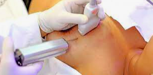

BIOPSIAS
Biopsias
Las biopsias se pueden realizar por cirugia laparoscopica o abierta pero el advenimiento de la cirugia percutanea llego para quedarse realizando estos procedimiento sin la necesidad de anestesia geneal ni prolongacion de la estadia sanatorial
Estos procedimientos pueden realizarse en forma ambulatario. Requiere 6 horas de observacion ya que su complicacion principal son los sangrados y los mismos ocurren en un 80% dentro de las 6 horas posteriores a la puncion.
Depende el caso y el organo a punzar es de buena practica realizar estos procedimientos con un patologo presente para indicar al cirujano si la muestra tomada es represantativa y asi no seguir exponiendo al paciente a mas punciones de las necesarias.